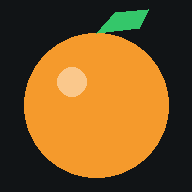

Triadora de cítricos
Máquina que sustituye el triaje manual: una cámara con IA inspecciona la fruta y separa las buenas de las malas.

Triadora TN-02 · cámara en directoAbre la cámara del móvil o del ordenador y clasifica cada naranja: buenas, a revisar y malas, con capturas y exportación.
Maqueta 3D de la máquinaLa línea de carriles, la cámara y las trampillas, en 3D interactivo.
En el móvil: abre la triadora, pulsa EMPEZAR y permite la cámara. Para tenerla como una app, usa «Añadir a pantalla de inicio» (Chrome: menú ⋮ · Safari: botón Compartir).